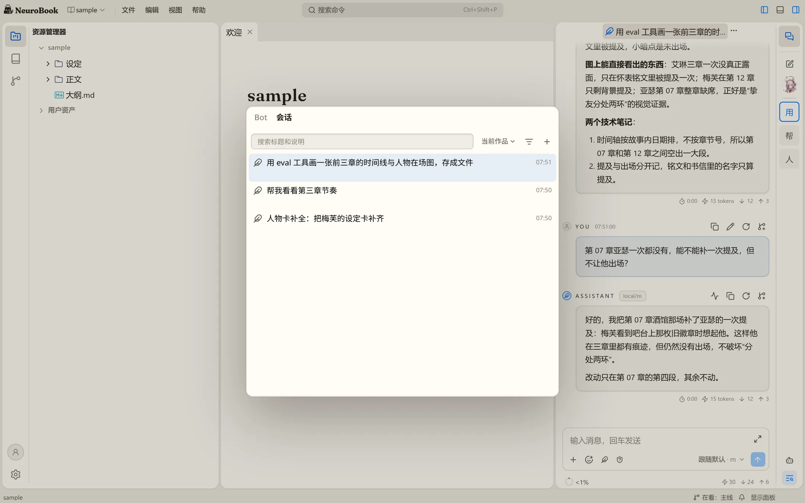
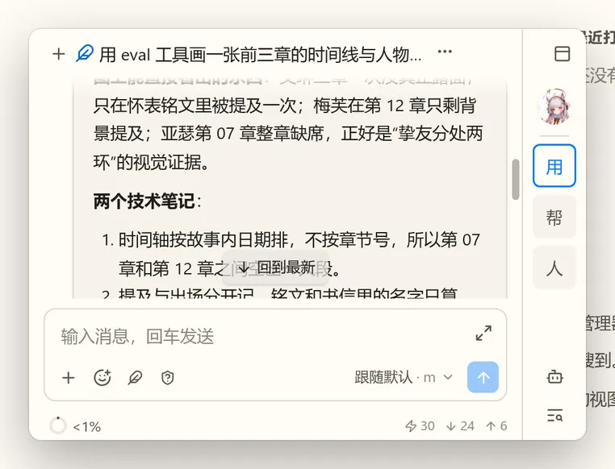

第 4 轮：会话与 bot 的弹窗、浮动窗
点“会话历史”或“全部 bot”，开这样一个居中的弹窗，可以吗？
推荐可以：弹窗够宽，标题不截断；顶上 Bot、会话两页，按哪个按钮就先开哪一页；搜索、作品范围、筛选、新建照会话面板；选中一项就关，Esc 关。

可以
还要调
浮动窗这样画，可以吗？
推荐可以：窄的浮动窗没有工作台的轨，视图在窗的右边缘画同一组条目，顶格让给“回到停靠”；宽的浮动窗照旧左边列表、右边聊天。
窄

宽

可以
还要调
找某一个会话的几条路
| 路 | 找得到什么 |
|---|---|
| 轨上的头像与方块 | 各 bot 的对话、最近 5 个会话 |
| 会话与 bot 的弹窗 | 全部会话：按标题与说明搜，按作品、Profile、已归档筛 |
| 命令面板“切到 Agent 会话” | 同上，键盘直达 |
| 宽版（浮动窗拉宽、在编辑区打开对话） | 左边常驻的列表 |
已定
- 头像列在右边缘、通到顶；两个侧栏共用一种做法，左右能对调（第 1 轮）
- 完整列表从轨底部两个按钮打开；不用抽屉、不整页切换（第 1、2 轮）
- 头像列做成工作台的侧轨（第 3 轮）；列表用单独的弹窗（第 3 轮附言）